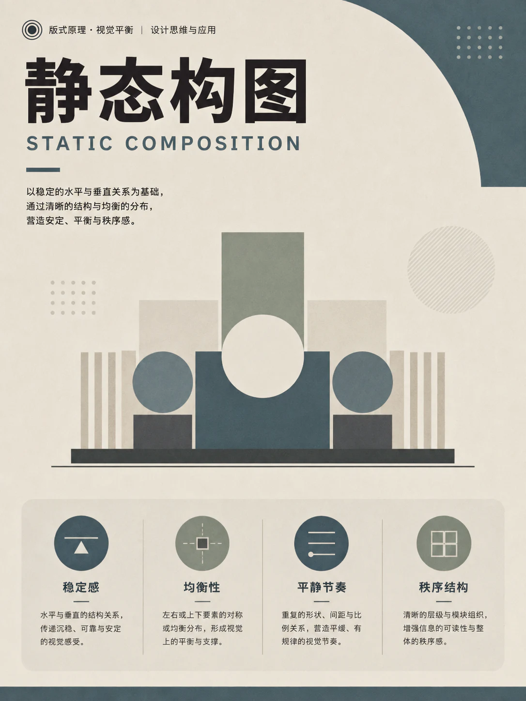

横平竖直为什么让人安心
OBLIQUE EFFECT & PERCEPTUAL GRAVITY
把一幅挂画歪出 2°，绝大多数人站在三米外就能一眼挑出毛病；但如果两条斜线都歪在 45° 附近，相差同样的 2° 却常常看不出来。1972 年，心理学家斯图尔特·阿佩尔（Stuart Appelle）在《心理学公报》系统综述人类与动物的视知觉实验，把这一普遍现象命名为「斜线效应（Oblique Effect）」。
进化与生活环境都在强化这套偏好：地球重力定义了垂直下坠的方向，海平面与地面定义了水平基准，人眼视皮层中负责编码水平与垂直朝向的神经响应更敏锐。鲁道夫·阿恩海姆在《艺术与视知觉》（1954 / 1974）中进一步指出，矩形画框内部天生藏着一套由水平轴与垂直轴构成的「结构骨架」。
当版面里的主体、文字基线和留白边界顺着这套正交骨架安放时，大脑无需额外消耗精力去「扶正」或猜测它会往哪边滑倒，认知负担瞬间下降，安全感与可信度随之浮现。
水平线与双眼连线、地球地平线完全平行。
拆解静态构图的四根梁柱
FOUR PILLARS OF THE 089 POSTER
089 原海报把静态构图凝练成「稳定感、均衡性、平静节奏、秩序结构」四条。点击下方任意一枚原海报圆徽，在旁边的石碑剖面图上逐层看清每一条在画面里怎么落地。
稳定感
ORTHOGONAL STABILITY原海报：「水平与垂直的结构关系，传递沉稳、可靠与安定的视觉感受。」
静态构图的第一条底线是「横平竖直」。画面的主承重边与画框四边保持平行和垂直，所有立柱垂直落在地基水平线上，眼睛一进场就获得明确的重力坐标。
自检口诀：把画面缩到拇指大小，最粗的主轮廓线是不是依然严格横平竖直？
很多人看完「左右或上下要素的对称或均衡分布」，会把静态构图窄化成「左右镜像复制」。其实对称只是最直白的一种静态；真正决定静不静的，是水平垂直基线有没有站稳、视觉重心有没有落低、总力矩有没有抵消。
静态不等于死对称
ASYMMETRIC STATIC EQUILIBRIUM
对称构图最容易得到静态感，但「静态构图」涵盖的疆域比严格镜像大得多。阿恩海姆与蒙德里安反复强调一个力学直觉：颜色越暗、越实、越孤立的块件，视觉分量越沉。
因此，把一块面积较大的浅色暖石放得离中轴稍远，再把一块面积更小的深炭黑重块往中轴拉近，两端视觉力矩恰好抵消时，横梁一样纹丝不动——这叫非对称静态均衡。它既有静态构图的安静克制，又避开了左右照抄的沉闷。
如果你要找的是绕中心向四周均匀发散的均衡，可看同小类的087 放射平衡原则；若侧重多面棱镜沿轴线结晶咬合，见088 晶体式平衡原则；而当你决定主动打破横平竖直去要速度与冲击时，那就跨进了090 动态构图。
天平向右倾沉
拖动上方右侧色块，或向左收短力臂，直到横梁归于水平。
从神庙立面到新造型主义
LINEAGE OF ORTHOGONAL ORDER
静态构图并非当代软件发明的网格技巧，它从古典建筑立面的承重逻辑一路走进 20 世纪抽象绘画与视知觉心理学。点选下方四个节点，看同一条水平垂直脉络如何演进。
维特鲁威 · 《建筑十书》
VITRUVIUS · DE ARCHITECTURA
古罗马建筑师维特鲁威把「模数对称（symmetria）」与「外观和谐（eurhythmia）」定为建筑立面的核心准则：整座神庙以列柱直径为基准单位，在水平基台与垂直柱廊间建立稳固不可动摇的秩序。
给平面设计的遗产：把重复间距锁进同一模数，水平底基永远托住垂直立柱。
什么时候用，何时别用
WHEN STATIC WORKS — AND WHEN IT STALLS
需要可信、沉静、久看不累的版面
- 建筑、美术馆与器物画册：作品本身讲究材质与空间，横平竖直能退居幕后托起质感。
- 金融年报、律所与机构官网：用户第一需求是专业、可靠、不出意外，静构天然降低戒心。
- 典籍书籍封面与品牌包装：克制的对称或低重心分布耐得住反复细看，不易过时。
- 冥想、阅读与精密工具界面：减少多余斜势和视觉噪音，让用户专注内容本身。
要速度、冲突、紧迫感或临场破框时
- 体育赛事、赛车与街头潮流海报：纯静态会把速度感彻底冻住，此时应转向090 动态构图，用斜轴与冲势带动肾上腺素。
- 限时促销与强烈情绪号召：唐迪斯（1973）指出平抑（Leveling）虽和谐却少惊讶，急需抢眼时反而需要锐化（Sharpening）打破预期。
- 需要「画外延伸」或「强烈向内框锁」的叙事镜头：可分别参考091 开放式构图与092 封闭式构图。
- 强引导视觉落点或双主角博弈的版面：按信息主次交由093 单一焦点构图或094 多重焦点构图处理。
契合：水平基座与垂直柱格把“混凝土与光”的建筑质感直接立住，沉静、耐看、像一本可以收藏的展册。
结论很简单：构图没有绝对高下。静态构图的价值在于「克制与持久」，一旦内容本身卖的是冲刺与颠覆，硬套静态反而最伤气质。
小练习：挑出稳固版面
SINGLE-VARIABLE STABILITY TEST
你要为一座现代建筑博物馆制作「混凝土与光」常设展海报，目标是在第一眼就传达沉稳、可信、长久的建筑秩序。下面四个方案的文字、配色、块面总面积、左右对称与 0° 正交全无二致，只改变了一个变量（深色主重块的垂直落位）。哪一个最稳固？
原海报与静构词汇表
ORIGINAL POSTER & FIELD INDEX
